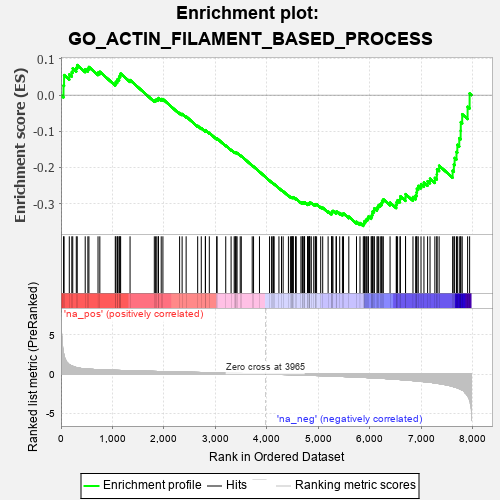
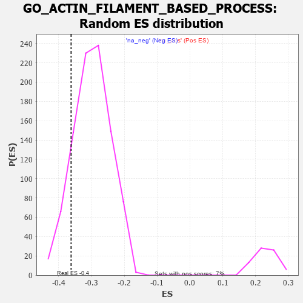

| | | Dataset | 7d |
| Phenotype | NoPhenotypeAvailable |
| Upregulated in class | na_neg |
| GeneSet | GO_ACTIN_FILAMENT_BASED_PROCESS |
| Enrichment Score (ES) | -0.36217156 |
| Normalized Enrichment Score (NES) | -1.2105366 |
| Nominal p-value | 0.122977346 |
| FDR q-value | 0.6190183 |
| FWER p-Value | 1.0 |
Table: GSEA Results Summary

Fig 1: Enrichment plot: GO_ACTIN_FILAMENT_BASED_PROCESS
Profile of the Running ES Score & Positions of GeneSet Members on the Rank Ordered List
| PROBE | GENE SYMBOL | GENE_TITLE | RANK IN GENE LIST | RANK METRIC SCORE | RUNNING ES | CORE ENRICHMENT | | 1 | TGFB3 | | | 49 | 2.654 | 0.0266 | No |
| 2 | RAC2 | | | 60 | 2.442 | 0.0555 | No |
| 3 | CSRP3 | | | 161 | 1.186 | 0.0574 | No |
| 4 | RHOU | | | 210 | 1.031 | 0.0640 | No |
| 5 | RHOH | | | 228 | 0.987 | 0.0740 | No |
| 6 | FSCN1 | | | 297 | 0.830 | 0.0756 | No |
| 7 | TNNC2 | | | 315 | 0.795 | 0.0833 | No |
| 8 | LRP1 | | | 470 | 0.648 | 0.0716 | No |
| 9 | KIF23 | | | 522 | 0.622 | 0.0728 | No |
| 10 | SRF | | | 542 | 0.615 | 0.0779 | No |
| 11 | ID1 | | | 719 | 0.555 | 0.0623 | No |
| 12 | SETD3 | | | 754 | 0.544 | 0.0647 | No |
| 13 | MEF2C | | | 1054 | 0.473 | 0.0323 | No |
| 14 | FZD10 | | | 1065 | 0.470 | 0.0368 | No |
| 15 | CDK10 | | | 1092 | 0.465 | 0.0393 | No |
| 16 | MYO1D | | | 1099 | 0.464 | 0.0442 | No |
| 17 | SRC | | | 1128 | 0.459 | 0.0463 | No |
| 18 | NCK2 | | | 1131 | 0.458 | 0.0517 | No |
| 19 | MTSS1 | | | 1149 | 0.454 | 0.0552 | No |
| 20 | GAB1 | | | 1158 | 0.453 | 0.0598 | No |
| 21 | KPTN | | | 1341 | 0.422 | 0.0417 | No |
| 22 | ABR | | | 1812 | 0.335 | -0.0143 | No |
| 23 | GATA4 | | | 1837 | 0.330 | -0.0132 | No |
| 24 | SMAD4 | | | 1860 | 0.326 | -0.0120 | No |
| 25 | PAK3 | | | 1889 | 0.322 | -0.0116 | No |
| 26 | CUL3 | | | 1893 | 0.321 | -0.0080 | No |
| 27 | FMNL2 | | | 1946 | 0.314 | -0.0108 | No |
| 28 | BRSK2 | | | 1979 | 0.308 | -0.0111 | No |
| 29 | WASF1 | | | 2303 | 0.259 | -0.0492 | No |
| 30 | BCAS3 | | | 2352 | 0.253 | -0.0522 | No |
| 31 | MET | | | 2430 | 0.240 | -0.0591 | No |
| 32 | VPS4A | | | 2654 | 0.205 | -0.0850 | No |
| 33 | SLIT2 | | | 2724 | 0.195 | -0.0915 | No |
| 34 | FER | | | 2803 | 0.183 | -0.0992 | No |
| 35 | BRK1 | | | 2805 | 0.183 | -0.0970 | No |
| 36 | DAPK3 | | | 2880 | 0.169 | -0.1044 | No |
| 37 | WNT4 | | | 3023 | 0.146 | -0.1208 | No |
| 38 | TLN1 | | | 3030 | 0.145 | -0.1197 | No |
| 39 | TWF1 | | | 3199 | 0.123 | -0.1397 | No |
| 40 | SMAD3 | | | 3303 | 0.105 | -0.1516 | No |
| 41 | FMN1 | | | 3363 | 0.095 | -0.1579 | No |
| 42 | GMFB | | | 3381 | 0.091 | -0.1590 | No |
| 43 | GAS2 | | | 3392 | 0.090 | -0.1591 | No |
| 44 | TESK2 | | | 3401 | 0.089 | -0.1591 | No |
| 45 | EHBP1 | | | 3419 | 0.087 | -0.1602 | No |
| 46 | CDK5 | | | 3480 | 0.080 | -0.1668 | No |
| 47 | FES | | | 3501 | 0.077 | -0.1684 | No |
| 48 | NF1 | | | 3713 | 0.040 | -0.1949 | No |
| 49 | FMNL3 | | | 3739 | 0.036 | -0.1977 | No |
| 50 | XIRP2 | | | 3854 | 0.020 | -0.2120 | No |
| 51 | ACTN1 | | | 4050 | -0.016 | -0.2367 | No |
| 52 | PDE4B | | | 4089 | -0.022 | -0.2413 | No |
| 53 | MTOR | | | 4114 | -0.025 | -0.2441 | No |
| 54 | ABL1 | | | 4125 | -0.027 | -0.2450 | No |
| 55 | CRK | | | 4139 | -0.031 | -0.2463 | No |
| 56 | ARPC2 | | | 4232 | -0.047 | -0.2575 | No |
| 57 | WNT11 | | | 4282 | -0.056 | -0.2631 | No |
| 58 | BAG4 | | | 4314 | -0.061 | -0.2663 | No |
| 59 | RALA | | | 4416 | -0.079 | -0.2782 | No |
| 60 | FRMD5 | | | 4455 | -0.085 | -0.2820 | No |
| 61 | EPS8 | | | 4474 | -0.088 | -0.2832 | No |
| 62 | HIP1 | | | 4485 | -0.092 | -0.2834 | No |
| 63 | MEF2A | | | 4499 | -0.095 | -0.2838 | No |
| 64 | MOB2 | | | 4504 | -0.095 | -0.2832 | No |
| 65 | ILK | | | 4510 | -0.096 | -0.2826 | No |
| 66 | ABI2 | | | 4554 | -0.106 | -0.2868 | No |
| 67 | NISCH | | | 4568 | -0.109 | -0.2871 | No |
| 68 | ARPC3 | | | 4659 | -0.129 | -0.2970 | No |
| 69 | LIMK1 | | | 4684 | -0.136 | -0.2984 | No |
| 70 | PTK7 | | | 4687 | -0.136 | -0.2970 | No |
| 71 | ARF6 | | | 4704 | -0.140 | -0.2973 | No |
| 72 | CNN1 | | | 4727 | -0.144 | -0.2983 | No |
| 73 | WASF3 | | | 4730 | -0.145 | -0.2968 | No |
| 74 | MYO5A | | | 4787 | -0.155 | -0.3020 | No |
| 75 | FLII | | | 4795 | -0.156 | -0.3010 | No |
| 76 | TNIK | | | 4804 | -0.158 | -0.3001 | No |
| 77 | WDR1 | | | 4824 | -0.163 | -0.3005 | No |
| 78 | CNN2 | | | 4828 | -0.163 | -0.2989 | No |
| 79 | BIN3 | | | 4832 | -0.165 | -0.2972 | No |
| 80 | DLG1 | | | 4860 | -0.169 | -0.2986 | No |
| 81 | CAPZB | | | 4908 | -0.179 | -0.3024 | No |
| 82 | TBCK | | | 4937 | -0.186 | -0.3036 | No |
| 83 | CAP2 | | | 4943 | -0.186 | -0.3020 | No |
| 84 | ARAP1 | | | 4963 | -0.191 | -0.3020 | No |
| 85 | PDPK1 | | | 5043 | -0.207 | -0.3096 | No |
| 86 | FLNB | | | 5082 | -0.220 | -0.3117 | No |
| 87 | PARVA | | | 5187 | -0.245 | -0.3220 | No |
| 88 | SSH1 | | | 5254 | -0.258 | -0.3272 | No |
| 89 | SCN1A | | | 5260 | -0.261 | -0.3246 | No |
| 90 | PICK1 | | | 5265 | -0.263 | -0.3219 | No |
| 91 | FAT1 | | | 5281 | -0.267 | -0.3205 | No |
| 92 | ELMO2 | | | 5341 | -0.283 | -0.3246 | No |
| 93 | EPHA1 | | | 5349 | -0.285 | -0.3219 | No |
| 94 | LATS1 | | | 5412 | -0.298 | -0.3262 | No |
| 95 | FRMD3 | | | 5465 | -0.311 | -0.3290 | No |
| 96 | ACTN3 | | | 5486 | -0.315 | -0.3276 | No |
| 97 | TTC17 | | | 5589 | -0.341 | -0.3365 | No |
| 98 | PDCL3 | | | 5738 | -0.388 | -0.3506 | No |
| 99 | BBS4 | | | 5806 | -0.407 | -0.3541 | No |
| 100 | RAB13 | | | 5870 | -0.425 | -0.3569 | Yes |
| 101 | ARPC4 | | | 5886 | -0.430 | -0.3535 | Yes |
| 102 | SUN2 | | | 5893 | -0.433 | -0.3489 | Yes |
| 103 | KCNQ1 | | | 5918 | -0.441 | -0.3465 | Yes |
| 104 | CAP1 | | | 5935 | -0.447 | -0.3431 | Yes |
| 105 | ACTN2 | | | 5960 | -0.458 | -0.3404 | Yes |
| 106 | TPM2 | | | 5970 | -0.460 | -0.3359 | Yes |
| 107 | JMY | | | 6023 | -0.479 | -0.3366 | Yes |
| 108 | RAC1 | | | 6036 | -0.484 | -0.3322 | Yes |
| 109 | ADD2 | | | 6046 | -0.487 | -0.3273 | Yes |
| 110 | EVL | | | 6052 | -0.490 | -0.3219 | Yes |
| 111 | CALR | | | 6077 | -0.499 | -0.3188 | Yes |
| 112 | DBNL | | | 6084 | -0.501 | -0.3134 | Yes |
| 113 | GBA2 | | | 6136 | -0.515 | -0.3135 | Yes |
| 114 | ROCK1 | | | 6152 | -0.520 | -0.3090 | Yes |
| 115 | PARVB | | | 6168 | -0.528 | -0.3044 | Yes |
| 116 | MYO1E | | | 6200 | -0.537 | -0.3017 | Yes |
| 117 | TPM1 | | | 6226 | -0.545 | -0.2982 | Yes |
| 118 | CDC42 | | | 6236 | -0.548 | -0.2925 | Yes |
| 119 | SVIL | | | 6259 | -0.558 | -0.2884 | Yes |
| 120 | TRPM4 | | | 6390 | -0.612 | -0.2975 | Yes |
| 121 | SMTN | | | 6510 | -0.666 | -0.3045 | Yes |
| 122 | TRPV4 | | | 6515 | -0.668 | -0.2967 | Yes |
| 123 | KANK1 | | | 6536 | -0.678 | -0.2909 | Yes |
| 124 | ARF1 | | | 6583 | -0.701 | -0.2881 | Yes |
| 125 | ALMS1 | | | 6590 | -0.704 | -0.2801 | Yes |
| 126 | CATIP | | | 6690 | -0.756 | -0.2834 | Yes |
| 127 | PAK1 | | | 6691 | -0.757 | -0.2741 | Yes |
| 128 | FHOD3 | | | 6835 | -0.834 | -0.2821 | Yes |
| 129 | FHL3 | | | 6887 | -0.860 | -0.2779 | Yes |
| 130 | MYH11 | | | 6905 | -0.870 | -0.2694 | Yes |
| 131 | ESPN | | | 6911 | -0.873 | -0.2592 | Yes |
| 132 | GHSR | | | 6937 | -0.894 | -0.2513 | Yes |
| 133 | NPHP4 | | | 6991 | -0.931 | -0.2466 | Yes |
| 134 | MYH10 | | | 7048 | -0.966 | -0.2418 | Yes |
| 135 | LDB3 | | | 7119 | -1.008 | -0.2383 | Yes |
| 136 | COTL1 | | | 7166 | -1.046 | -0.2312 | Yes |
| 137 | HCN4 | | | 7260 | -1.134 | -0.2291 | Yes |
| 138 | ANK2 | | | 7298 | -1.170 | -0.2193 | Yes |
| 139 | MYO7A | | | 7302 | -1.175 | -0.2052 | Yes |
| 140 | GPD1L | | | 7343 | -1.215 | -0.1953 | Yes |
| 141 | KANK3 | | | 7605 | -1.559 | -0.2094 | Yes |
| 142 | KCNN2 | | | 7629 | -1.611 | -0.1924 | Yes |
| 143 | MCU | | | 7644 | -1.637 | -0.1739 | Yes |
| 144 | TRPM2 | | | 7680 | -1.712 | -0.1572 | Yes |
| 145 | MYO6 | | | 7697 | -1.753 | -0.1376 | Yes |
| 146 | PLS1 | | | 7734 | -1.855 | -0.1192 | Yes |
| 147 | TRPM7 | | | 7761 | -1.936 | -0.0986 | Yes |
| 148 | PDE4D | | | 7764 | -1.944 | -0.0748 | Yes |
| 149 | NPHP1 | | | 7791 | -2.041 | -0.0529 | Yes |
| 150 | CAV3 | | | 7896 | -2.739 | -0.0323 | Yes |
| 151 | ARRB1 | | | 7935 | -3.377 | 0.0046 | Yes |
Table: GSEA details [plain text format]

Fig 2: GO_ACTIN_FILAMENT_BASED_PROCESS: Random ES distribution
Gene set null distribution of ES for GO_ACTIN_FILAMENT_BASED_PROCESS